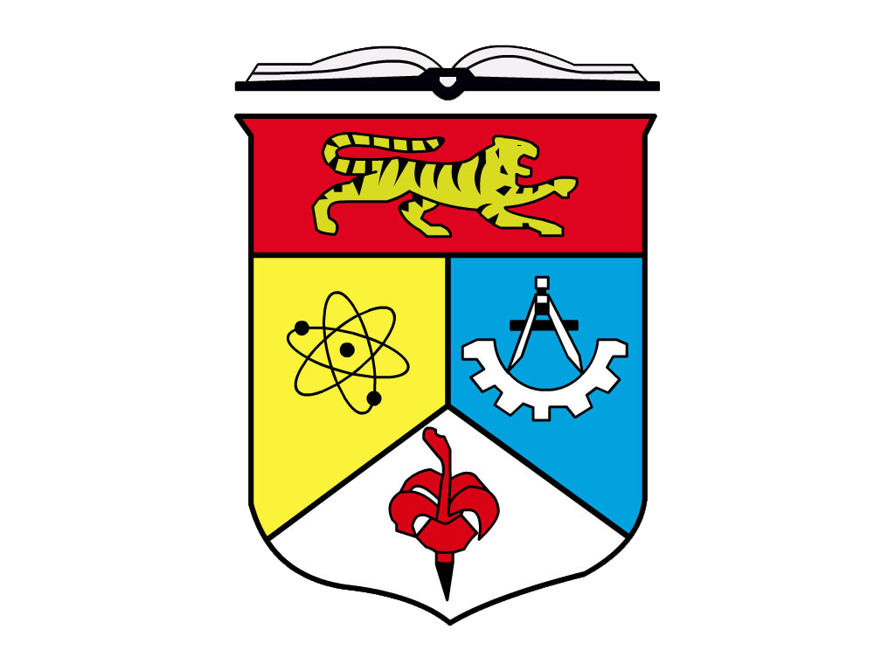

Platform digital bersepadu untuk mencari, mendaftar dan mengurus program pelajar Universiti Kebangsaan Malaysia secara sistematik dan berpusat.
UKMInvolve merupakan sistem digital rasmi yang dibangunkan bagi menyokong aspirasi Universiti Kebangsaan Malaysia dalam memperkasa penglibatan pelajar melalui pengurusan aktiviti bukan akademik yang lebih cekap, telus dan berimpak.
Direka khas untuk keperluan pelajar dan penganjur program UKM
Semua aktiviti dan program pelajar dipaparkan dalam satu platform rasmi untuk rujukan yang lebih sistematik.
Proses pendaftaran program yang pantas, mesra pengguna dan boleh diakses pada bila-bila masa.
Penganjur dapat menilai kadar penyertaan dan penglibatan pelajar secara lebih efektif.